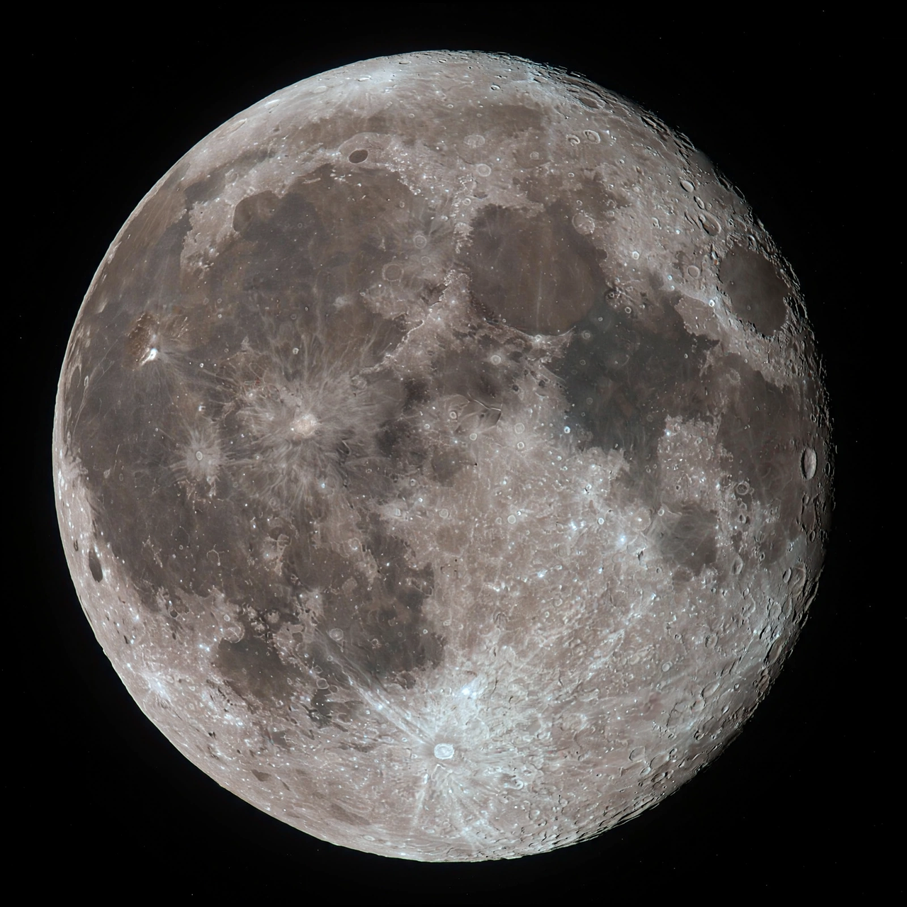

Ganymede (moon)
From Wikipedia, the free encyclopedia
| Ganymede (moon) | |
|---|---|
| Parent planet | Jupiter |
| Diameter | 5,268 km (largest moon in the solar system) |
| Features | Subsurface ocean; only moon with an internal magnetic field |
| Target of | ESA JUICE (orbit from 2034) |

Ganymede, the largest moon.Ganymede is a satellite of Jupiter and the largest and most massive moon in the solar system — larger than the planet Mercury, though less massive. Discovered by Galileo in 1610, it is a world of two terrains: dark, ancient, cratered ground and lighter grooved ice, both overlying a saltwater ocean, perhaps 100 km deep, buried beneath an ice crust — an ocean that may hold more water than all Earth's surface oceans combined.
Ganymede is the only moon known to generate its own internal magnetic field, implying a convecting iron core, and it induces auroras that betray its ocean to the Hubble Space Telescope. It is the principal target of ESA's JUICE spacecraft, which will enter orbit around Ganymede in the mid-2030s — the first orbiter of an outer-planet moon.
Context
With Europa and Callisto, Ganymede completes the triad of Jovian ocean worlds that JUICE and Europa Clipper are now converging on; its comparatively gentle radiation environment and intrinsic magnetosphere make it the most forgiving of the three for a long orbital mission.